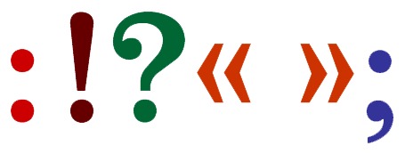
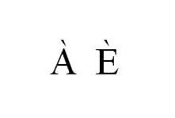

Typographie
La typographie – souvent abrégé en typo – désigne les différents procédés de composition et d’impression utilisant des caractères et des formes en relief, ainsi que l’art et la manière d’utiliser les différents types de caractères dans un but esthétique et pratique.
Serif et Sans SeriF
Les polices de caractères Serif, c'est à dire avec empattement (cf. définition plus bas), ont longtemps dominer le paysage typographique, notamment dans la presse écrite sur support papier. Leader incontesté, ce sont elles qui ont marqué l’histoire de leur empreinte, et cela depuis les tous premiers mots gravés dans le marbre.
Puis les polices Sans Serif sont arrivées. D’abord préconisées pour un usage plus moderne de l’écriture, elles ont surtout été sollicités pour la lecture sur écran, zone restreinte et vite pixellisée. Dans ce contexte, les polices avec empattements devenaient inconfortable, voire illisibles.
Empattement
Initialement, les empattements proviendraient de la trace laissée par l'ustensile utilisé pour écrire (plume, pinceau, etc.) lorsque la main s'élève en achevant le geste d'écriture. Une autre explication soutient que les empattements sont les vestiges du ciseau qui était planté de manière perpendiculaire au trait afin d'arrêter de manière précise le trait de gravure. L'outil laissait alors une marque correspondant à l'empattement de la lame utilisée. Ce défaut technique lié à la gravure se retrouve dans les gravures anciennes (inscriptions romaines sur pierre).
« En typographie, les empattements sont les petites extensions qui terminent les extrémités des caractères dans certaines polices d’écriture, dites avec empattement (au singulier ; serif en anglais), que l’on oppose aux polices sans empattement (sans serif). Une diagonale forme avec son empattement un angle appelé angle d’empattement, caractéristique d’une police. »Définition dans l'article Empattement (typographie) sur Wikipédia.
Tiret
Le tiret est un signe de ponctuation. Il ne doit pas être confondu avec le trait d’union. Il existe trois types de tirets nommés cadratins : le cadratin court (ou tier de cadratin), le demi-cadratin et le cadratin.
Le cadratin
Il est utilisé en typographie française pour introduire les répliques des dialogues ; il est placé en début de ligne et suivi d’une espace. Il ne doit pas être employé en double des guillemets, car ces derniers ouvrent et ferment le dialogue
Il sert également à encadrer les propositions incises – et exceptionnellement les éléments incident – dans la fonction de quasi-parenthèse avec une espace justifiante à l’extérieur et une espace insécable à l’intérieur. Il lui est souvent conféré une valeur littéraire par rapport à la parenthèse. Cependant, du fait que le cadratin inséré rompt le gris typographique ou la régularité de texte, de nombreux éditeurs lui préfèrent le demi-cadratin.
Le demi-cadratin
Le demi-cadratin est utilisé pour lister les énumérations, ainsi que pour séparer les intervalles – délimité par deux espaces fines insécables – surtout dans la typographie anglaise, et dans la française lorsque les bornes de l’intervalle sont composées.
Celui-ci est aussi utilisé en typographie française pour introduire les répliques des dialogues ; il est placé en début de ligne et suivi d’une espace. Il ne doit pas être employé en double des guillemets, car ces derniers ouvrent et ferment le dialogue.
Le tier de cadratin
Le tier de cadratin correspond principalement au trait d’union, mais avec quelques subtilités
Césures
En typographie et en orthographe, la coupure de mot, parfois appelée aussi césure, est l'opération qui consiste à couper par un tiret en fin de ligne un mot qui n’entrerait pas dans la justification. Cette coupure obéit à des règles bien précises qui varient d'une langue à l'autre. La plupart des logiciels de traitement de texte et de mise en page comportent un tel programme de césure.
Ponctuation double
Un signe de ponctuation double est une ponctuation qui est composée de deux signes graphiques identiques ou différents telles les deux points, le point d'exclamation, le point d'intérogation, les guillemets français et le point virgule. En typographie française l'usage de ses éléments de ponctuation est strict. Il doit impérativement y avoir une espace (l'espace typographique est un mot féminin) avant et après le signe de ponctuation double.
Lorsqu'un signe de ponctuation double peut se retrouver en fin de ligne, il est vivement conseillé de lui adjoindre une espace dite incécable placée avant le signe. Cela évite que la ponstuation double ne se place en début de la ligne suivante.
En HTML, pour obtenir une espace incécable, on doit utiliser ce caractère spécial .
Veuves & orphelines
En typographie, une veuve est la dernière ligne, le dernier mot ou encore le dernier signe de poctuation d'un paragraphe apparaissant isolée en haut d'une page. A linverse, une orpheline est la première ligne d'un paragraphe apparaissant isolée en bas d'une page. On essaye généralement d'éviter l'apparition des veuves et des orphelines dans un texte typographié, sauf bien sûr dans la composition des dialogues ou des vers.
On utilise souvent une formule mémotechnique pour les différencier : « Une orpheline n'a pas de passé, une veuve n'a pas d'avenir » (l'orpheline est la première ligne d'un paragraphe, et la veuve la dernière). On peut aussi se souvenir que dans l’expression « Veuves et orphelines », la veuve est en premier (donc haut de page), l’orpheline en second (donc bas de page).
A noter que pour des raisons esthétiques on évite également d'avoir le dernier mot ou le dernier signe de ponctuation d'un pagragraphe isolé sur la dernière ligne de ce celui-ci, bien que cela ne soit pas une règle officielle en typographie française.
Lettrines
Une lettrine est une lettre initiale majuscule décorée placée en tête d'un texte et occupant une hauteur supérieure à la ligne courante. Les lettres du premier mot des autres lignes sont généralement en petites capitales.
Comme lettre ornée, elle commence et décore une inscription, un paragraphe ou un chapitre d'ouvrage. Les moines du Moyen Âge cultivaient l'art de la lettrine dans leurs enluminures. Avec l'invention de l'imprimerie, la lettrine est devenue un ornement typographique. Elle peut provenir d’une vignette conçue à cet effet ou d’un caractère plus grand de la même police d'écriture ou d’une autre sorte.
Capitales accentuées
Le code de la typographie française rappelle que le français est une langue accentuée et que la « tolérance », à l’époque des machines à écrire à rouleau, de ne pas accentuer les capitales, n’a aucune raison de s’étendre à la typographie : en français, les capitales doivent être accentuées lorsque la police dispose du caractère approprié. La plupart des polices utilisées en informatique comportent de tels accents, les fontes typographiques également.